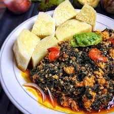

Yam

Description
Kontomire stew is a very popular staple dish in Ghana. It is traditionally
made with cocoyam leaves (called kontomire leaves) but can easily be made
with frozen or fresh spinach.
This stew can be made vegan, but is traditionally seasoned with a variety
of dried, canned, fresh, and even cured/fermented fish. Ampesi is just the
name of boiled plantain and yam. Since it is made with a ton of greens,
this dish is packed with nutrients and can be modified to suit different
tastes.
Ingredients
- 4 bunches 600 g. spinach, fresh or frozen
- 2-3 large tomatoes diced
- 1 habanero pepper or more to taste
- 1/2 inch piece of ginger
- 2 garlic cloves
- 1/2 large or 1 medium onion, sliced
- 1 tbsp. smoked shrimp powder optional
- 1/2 cup egusi ground melon seeds
- 1/2 tsp. salt or to taste
- Boiled yam or plantain (green or ripe), or rice
- Boiled egg
- 3 tablespoons to 1/2 cup vegetable oil or palm oil
- Sliced avocado
Steps
-
Place ginger, garlic, and habanero in a blender. Add up to 1/4 cup of
water to help blend. Set aside.
-
If using fresh spinach, remove stems from spinach and roughly chop.
-
In your Perfect Pot, heat vegetable oil and add sliced onions. Saute
onions for about 3 minutes until they soften and start to brown
slightly.
-
Add parsley, bouillon cube, smoked paprika, shrimp powder, and momoni
(fermented fish) to the oil and saute until fragrant, about 3 minutes.
Momoni may break up in oil, so remove any bones if using. Keep stirring
to prevent burning.
-
Add blended ginger, garlic, and habanero mixture to the oil and saute
briefly, about 2 minutes.
-
Add diced tomatoes, breaking them up with the back of your Beechwood
Spatula. Bring to a light boil, then reduce to a simmer. Stir
occasionally to prevent burning.
-
Simmer uncovered until the stew thickens and some water evaporates,
about 10-15 minutes. Remove cover, and stir egusi into stew. Cover again
and simmer for 5-7 minutes without stirring.
-
Add spinach and cover. The spinach should wilt after about 3 minutes.
When wilted, stir spinach into tomato stew until incorporated.
-
Add canned mackerel. Do not add tomato sauce from canned fish to your
stew, as it changes the flavor of the stew. I also remove the soft bone
in the middle of the mackerel but this can be left in, as it is soft and
is not a choking hazard.
-
Gently break up mackerel but keep the chunks fairly big. Simmer for 5-10
more minutes uncovered.
-
Serve hot with a side of boiled yam, boiled rice, or boiled plantain, an
egg, and sliced avocado.